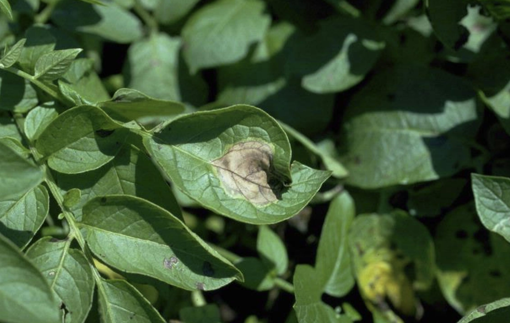

Exit
Early Blight in Potato
Quick facts
- Early Blight is a common fungal disease in potatoes caused by Alternaria solani.
- The disease typically affects the leaves, stems, and tubers of potato plants.
- Symptoms include dark, concentric lesions on the leaves and early defoliation.
Pesticides
- SAAF Fungicide.
- Indofil M45 Fungicide.
- Antracol Fungicide.
- Nativo Fungicide.
- Amistar Top Fungicide.
Identification
- Brown spots with concentric rings develop on the leaves, leading to a target-like appearance.
- Leaves may yellow and die prematurely, especially under warm, wet conditions.
- Severe infections can cause the entire plant to defoliate, reducing yield.
- The disease can also affect potato tubers, causing dry, dark rot.
- Early Blight is more likely to occur in older or stressed plants.
Biology
- Early Blight is caused by the fungus Alternaria solani.
- The fungus overwinters in plant debris and soil, spreading through wind and rain.
- Warm, humid conditions favor the spread of the disease.
- The fungus can infect a wide range of host plants, including tomatoes and potatoes.
- Infection typically begins on the lower leaves and progresses upward.
- The disease cycle is often repeated, leading to multiple infections throughout the growing season.
- Infected tubers can also spread the fungus to healthy plants.
- Fungus spores are spread by wind, water, and mechanical means.
Managing Early Blight
Resistant varieties
- Planting resistant varieties can reduce the likelihood of infection.
- Resistant varieties are less likely to develop severe symptoms.
Cultural controls
- Practice crop rotation to reduce the buildup of Alternaria solani in the soil.
- Remove plant debris from the field after harvest.
- Ensure proper spacing between plants to improve air circulation.
- Avoid overhead irrigation, which can promote disease spread.
- Maintain healthy soil to support vigorous plant growth.
Physical controls
- Remove and destroy infected plant parts as soon as symptoms appear.
- Use fungicide sprays as a preventative measure in areas where Early Blight is common.
- Sanitize tools and equipment to prevent the spread of the disease.
- Control weeds to reduce alternate hosts for the fungus.

